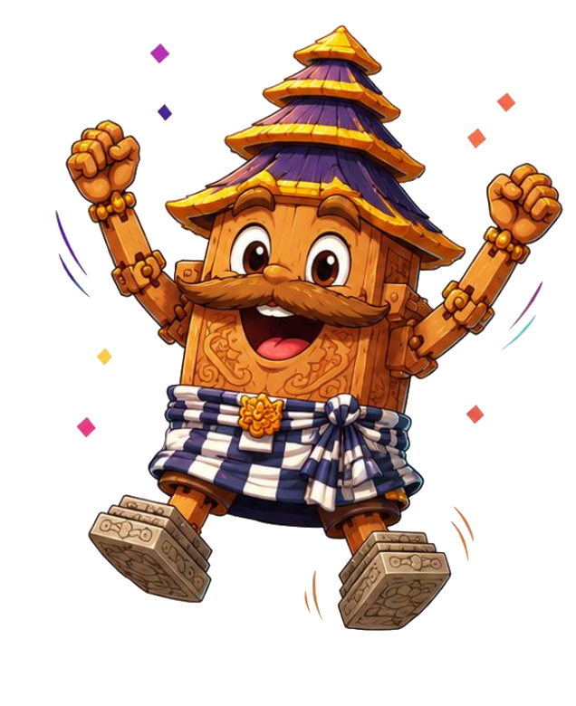

Amertakarsa adalah angkatan Persiapan Keberangkatan ke-280 LPDP — kehendak yang terus hidup dalam ilmu, karya, dan pengabdian untuk Indonesia.
Integritas · Profesionalisme · Sinergi · Pelayanan · Kesempurnaan

Berarti abadi, kehidupan, atau air keabadian.
Berarti kehendak, tekad, atau dorongan untuk bertindak.
Amertakarsa merepresentasikan semangat PK-280 untuk terus belajar, berkarya, dan mengabdi untuk Indonesia dengan tekad yang tidak lekang oleh waktu.
Setiap perubahan besar selalu bermula dari asa — api yang menggerakkan perubahan bangsa. Asa menjadi titik temu sekaligus titik tuju setiap Awardee PK-280 untuk terus belajar, berkarya, dan mengabdi.
Tema angkatan terinspirasi filosofi Arsitektur Bali Tri Mandala, pembagian tiga area berdasarkan tingkat kesakralannya:
Gapura Candi Bentar pada logo merepresentasikan huruf “A” — Awardee LPDP yang bertekad untuk berproses bersama demi tujuan yang mulia bagi Indonesia.

Terinspirasi dari Menara Meru Bali, bangunan paling sakral dan utama dalam tatanan Trimandala, yang melambangkan Gunung Mahameru sebagai pusat alam semesta. Meru merepresentasikan harmoni antara manusia, alam, dan spiritualitas yang menjadi landasan kehidupan.
Atap ijuk berundak sebagai rambut, dinding kayu berornamen Bali sebagai wajah dan badan, umpak batu sebagai kaki yang melambangkan fondasi yang kokoh, serta kain poleng Bali sebagai simbol keseimbangan hidup.
Laksana fajar yang menyingsing setelah gelapnya malam, Aruna menjadi simbol harapan, semangat baru, dan keberanian untuk memulai langkah perubahan.
Keunggulan sejati bukan hanya tentang menjadi yang terbaik, tetapi tentang menghadirkan manfaat bagi sesama, menjadikan ilmu sebagai penggerak perubahan.
Menjadi yang terdepan bukan sekadar tentang memimpin, tetapi juga tentang membuka jalan bagi orang lain dan mengubah tantangan menjadi peluang.
Ketulusan adalah fondasi dari setiap pengabdian. Satwika melambangkan jiwa yang jujur, berhati luhur, dan senantiasa menjunjung nilai kebaikan.
Kekuatan seorang pemimpin lahir dari kebijaksanaan dalam mengambil keputusan dan keteguhan dalam memegang nilai, memimpin dengan hati.
Seperti cakrawala yang membentang luas, ilmu pengetahuan membuka ruang bagi lahirnya perspektif baru dari panggung dunia kembali untuk Indonesia.
Kesehatan hewan, manusia, dan lingkungan saling berkaitan dan tidak dapat dipisahkan. Melalui pendekatan One Health, Amertakarsa menghadirkan aksi sosial di Pasar Minggu, Jakarta Selatan, pada 15–16 Agustus 2026.
Shelter terbesar di Jakarta dengan sekitar 800 anjing dan 250 kucing. Bersama Dinas KPKP Provinsi DKI Jakarta serta relawan dokter hewan, kegiatan ini menjaga status bebas rabies dan meningkatkan kesejahteraan hewan terlantar.
Didampingi komunitas lokal Bersama Belajar, program ini meningkatkan literasi kesehatan dan sanitasi warga — khususnya anak-anak — yang selama ini memiliki akses terbatas terhadap layanan kesehatan preventif.